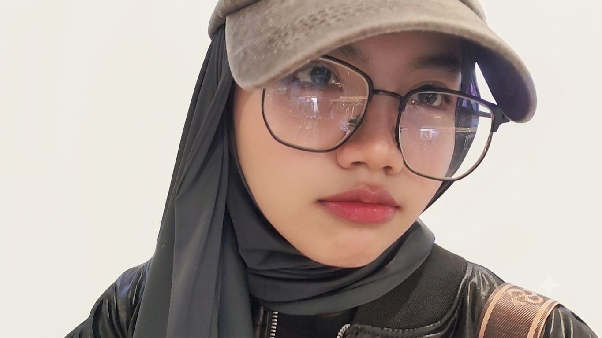

Halo, selamat datang!👋
Saya Rieka
Information Systems Student | Business Analyst Enthusiast
Saya adalah mahasiswa Sistem Informasi yang berfokus pada menghubungkan teknologi, bisnis, dan kebutuhan pengguna. Saya memiliki pengalaman dalam business process mapping, analisis sistem, ERP, serta perancangan UI/UX untuk menciptakan solusi digital yang lebih efektif dan user-friendly.
Saya percaya bahwa setiap masalah memiliki peluang untuk dikembangkan menjadi solusi yang lebih sederhana, terstruktur, dan memberikan dampak nyata bagi pengguna maupun bisnis.
